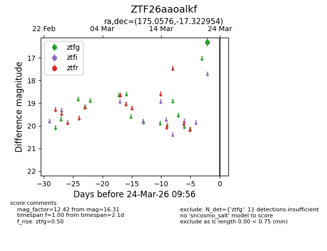
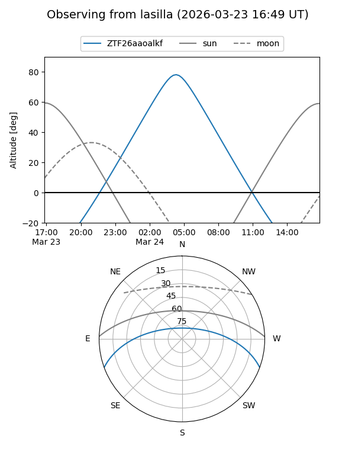
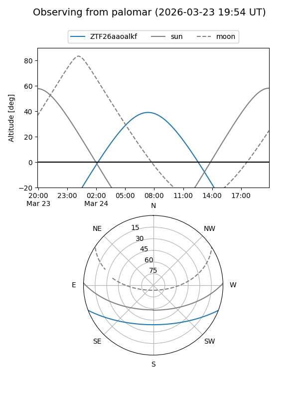

ZTF26aaoalkf
Target ZTF26aaoalkf at 2026-03-24 09:58
Aliases and brokers:
FINK: link
Lasair: link
ALeRCE: link
alt names
ZTF26aaoalkf (ztf,fink_ztf)
Coordinates:
equatorial (ra, dec) = 175.0576,-17.32295
equatorial (HMS+DMS) = 11:40:13.83,-17:19:22.63
galactic (l, b) = (279.6862,+42.31196)
Flags:
Photometry:
last ztfg=16.31
1 ztfg detections
Lightcurve

Visibility


Additional plots